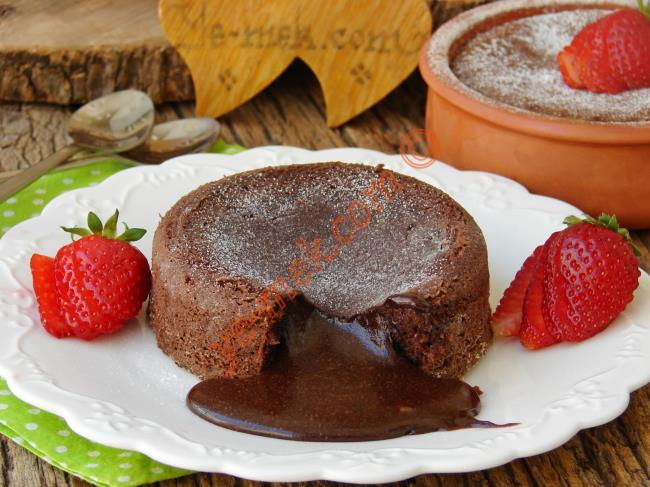
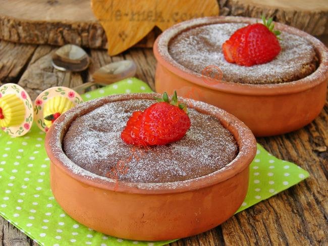

Sufle İçin Malzemeler:

- 2 adet yumurta
- 1/2 su bardağı un
- 1/2 su bardağı toz şeker
- 80 gr bitter çikolata
- 50 gr tereyağı
- Üzeri için:Pudra şekeri
Sufle Kaç Dakikada Hazırlanır:Bu tarifi hazırlamak için toplamda 15dk gerekmektedir
Kaç Kişiliktir:2 kişiliktir
Sufle Yapılışı:

- Öncelikle orta boy bir tava içine 50 gr (1 yemek kaşığı dolusu) tereyağı koyup, kısık ateş üzerinde yakmadan eritin.
- Eriyen yağın üzerine 80 gr bitter çikolatayı küçük küçük doğrayıp, ekleyin. Ardından kısık ateş üzerinde çikolataları sürekli karıştırarak, erimesini sağlayın.
- Çikolatalar tamamen eridikten sonra ocağın altını kapatın. Eriyen çikolatanın üzerine yarım su bardağı un koyun.
- Pürüzsüz bir kıvam elde edene kadar unu kaşık yardımı ile iyice karıştırıp, ılımaya bırakın. Tarifte kullandığım su bardağı ölçüsü 200 ml dir.
- Diğer tarafta orta boy derin bir kap içine 2 adet yumurta kırın. Yumurtalar çok küçük olmasın. Yumurtaların üzerine yarım su bardağı toz şeker ekleyin. Yumurta ve şekeri mikser yardımı ile köpürene kadar iyice çırpın.
- sufleyi çok şekerli sevmiyorsanız şeker miktarını biraz azaltabilirsiniz. Yumurta ve şekeri çırptıktan sonra üzerine ılıyan çikolatalı karışımı ekleyin. Mikser yardımı ile tekrar güzelce karıştırın.
- Daha sonra 2 adet güveç kabının tabanını ve yan kenarlarını tereyağı ile iyice yağlayın. Taban ve kenar kısımlarına biraz un serpiştirin.
- Hazırladığınız çikolatalı sufle harcını eşit olarak kaplara paylaştırın. Güveç kabı yerine herhangi fırına giren küçük kaplara da koyabilirsiniz.
- Hazırladığınız sufleyi önceden ısıtılmış 200 derece fırına verin.Sufleyi fırında 8 dakika kadar pişirin. Pişirme süresi 8 dakikayı çok geçmesin.Çikolatalı sufle piştikten sonra fırından çıkartıp,1 dakika kadar bekletin.Ardından servis tabağına ters çevirip çıkartın

- Suflenin üzerini isteğe göre pudra şekeri serpiştirip, bekletmeden hemen sıcak olarak servis edebilirsiniz.